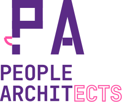
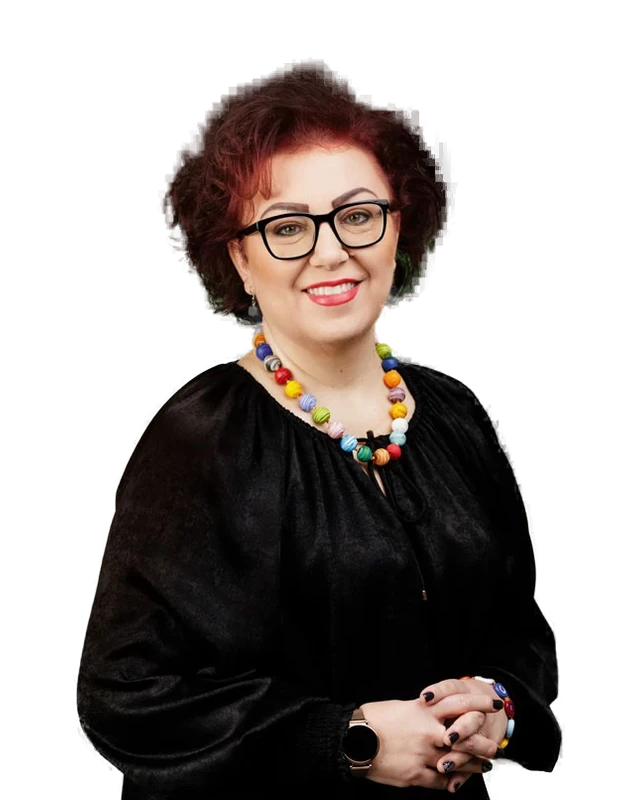
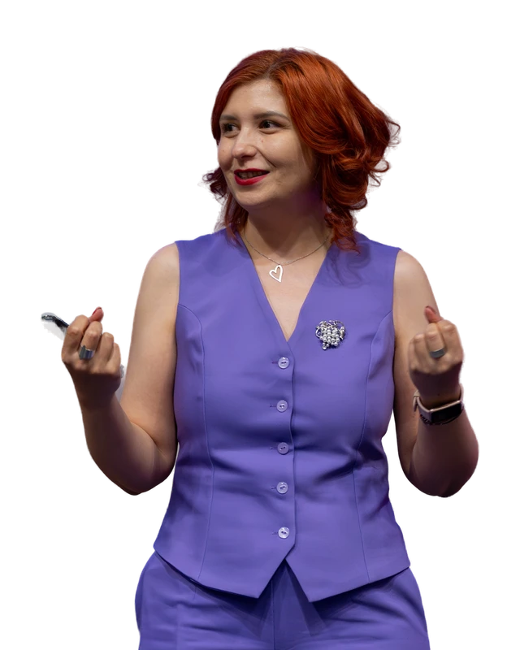

Eveniment pentru profesioniști HR · Ediția 1

HR & AI cine conduce schimbarea?
AI își face loc în organizații, rolul de arhitect încă e vacant.
Îmi iau biletPlata se efectuează online. Locul se consideră confirmat după efectuarea plății. Sunt doar 40 bilete disponibile.
AI-ul a intrat în organigramă. Cine construiește strategia?
AI-ul intră în organizație ca un produs care se integrează pe fiecare palier: în recrutare, în comunicare internă, în evaluare, în felul în care oamenii își fac treaba în fiecare zi. Și fiecare integrare are nevoie de cineva care o conduce: cineva care alege problema de rezolvat, definește soluția, înțelege și poate să numească riscurile și este responsabil de rezultat.
În majoritatea organizațiilor, poziția asta e liberă. Nimeni nu o revendică, așa că schimbarea se întâmplă nesupravegheat sau se blochează în piloți care nu se termină niciodată. HR-ul e funcțiunea cel mai bine plasată pentru a prelua rolul: cunoaște oamenii, procesele și cultura, adică exact terenul pe care se construiește integrarea AI. Pe 25 septembrie punem pe masă ce înseamnă concret rolul ăsta și cu ce începi.
Cu ce pleci de la eveniment
Harta trendurilor HR & AI din România și sud-estul Europei
Vezi ce schimbări viitoare sunt relevante și cum se traduc ele în activitatea ta.
AI Product Canvas pentru HR
Construim un canvas care pleacă de la procesele greoaie din HR și definește produsele pe care HR-ul le poate construi cu AI.
Reperele despre ce poate face, de fapt, AI-ul în HR
Pleci cu o înțelegere clară asupra capabilităților AI transpuse în exemple din task-urile de HR.
Strategia de abordare organizațională
Cum comunici mai departe și susții transformarea pornind de la obiectivele macro ale organizației.
Agenda evenimentului
Networking la sosire.
Contextul actual și cum ne influențează el deciziile și abordările. Cum putem noi să acționăm în acest context pentru a ajunge într-unul mai bun pentru noi.
Task-uri vs. joburi, automatizare vs. augmentare și cum arată organizația care integrează AI cu succes.
Unde se află funcțiunea de HR acum și cum ne putem repoziționa pentru a deveni indispensabili.
Laborator de lucru facilitat. Lucrăm în grupuri mici și mapăm trendurile HR & AI din sud-estul Europei și din România. Apoi, explorăm cum ar putea să arate ziua unui om de HR din 2036. Rezultatul acestui laborator este materialul de la care pleacă workshopul Corinei de după pauză.
Atelier de product thinking aplicat, în care lucrăm pe grupuri mici și construim un AI Product Canvas pe baza unor probleme și procese reale de HR. La final, obținem canvas-ul completat cu owner, acțiuni și riscuri potențiale.
Corina Neagu abordează ownershipul cu AI într-o discuție aplicată alături de Mirabela Ionescu (HR Director Hungary, Poland, Romania & Switzerland, Nagarro) și Raluca Păduraru. Pregătește-ți întrebările, le vom discuta pe cât mai multe dintre ele în cadrul acestui panel.
Extragem mesajele-cheie și planificăm pașii următori pe care să îi implementăm în organizațiile noastre.
Gazdele tale

Corina Neagu
Leadership & HR Strategist
Fondatoarea DARE. Consultant și trainer în HR, construiește de ani de zile comunitatea profesioniștilor de HR din România: peste 100.000 de oameni îi urmăresc munca pe LinkedIn.

Raluca Păduraru
Futures of Work Strategist
Lucrează cu lideri și echipe non-tehnice ca să construiască AI Business Translators: oameni care înțeleg problemele de business, le rezolvă cu ajutorul AI și construiesc sisteme care rămân în organizație.
Vrei să vii?
Acest eveniment se adresează oamenilor care văd că funcțiunea de HR se transformă sub ochii lor și vor să fie în rândul arhitecților viitorului.
Vino dacă ești
- HR Manager sau HR Director
- HR Business Partner
- În L&D sau People & Culture
- Un om de HR care simte că schimbarea i se întâmplă și vrea să o conducă
Nu e pentru tine dacă
Vrei un curs teoretic de utilizare AI. Seara asta e despre direcție, rol și, mai ales, despre primii pași concreți. La final, obții o hartă, un canvas completat și o strategie de abordare organizațională pe baza căreia transformi incertitudinea tehnologică într-un avantaj competitiv.
Logistică
Unde
Nagarro Orhideea Towers, București. Vei primi detaliile de acces prin email înainte de eveniment.
Când
Vineri, 25 septembrie 2026.
Welcome de la 14:30, începem la 15:00 fix.
Parcare
Cea mai apropiată parcare este vis-a-vis de sediul Nagarro, la Carrefour Orhideea. Noi îți recomandăm să vii cu metroul (stația Grozăvești).
Ce include biletul
Acces la toate sesiunile de lucru, snacks & coffee pe tot parcursul evenimentului.
Gazda evenimentului: Nagarro ne primește la Orhideea Towers.
Investiția ta
* Începând cu 9 septembrie și până la închiderea înscrierilor, biletul Standard costă 97 de lei.
Plata se efectuează online. Locul se consideră confirmat după efectuarea plății. Sunt doar 40 bilete disponibile.
Înscrierile se închid pe 22 septembrie.
Întrebări frecvente
Primesc factură?
Da, completezi CUI-ul când efectuezi plata. Dacă vrei să achiți prin OP sau ai uitat să introduci CUI-ul în formular, te rugăm să-l trimiți pe contact@upvance.global și vom emite factura separat.
Vrem să venim mai mulți din aceeași echipă. Cum facem?
Dacă organizația vrea să achiziționeze mai multe locuri, scrie-ne pe contact@upvance.global și rezolvăm.
Se înregistrează sesiunile?
Nu. E o seară de lucru intens, iar la finalul ei vei pleca cu rezultatul muncii noastre, ale tuturor. Vei primi slide-urile și materialele pe care lucrăm.
Nu mai pot ajunge. Ce fac?
Biletul se poate transfera către un coleg: trimite-ne numele noului participant pe contact@upvance.global până pe 22 septembrie, ca să apară corect pe lista de acces.
Rolul e disponibil. Vrei să-l ocupi tu?
Te așteptăm pe 25 septembrie, începând cu 14:30, la Nagarro Orhideea Towers.
Îmi iau biletEarly-bird 67 lei până pe 8 septembrie. Sunt doar 40 bilete disponibile.